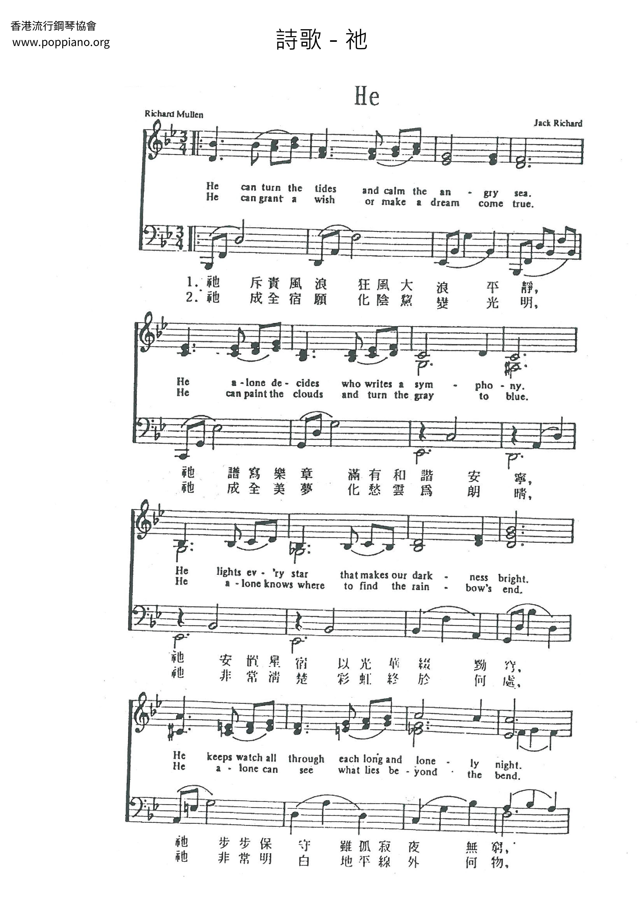
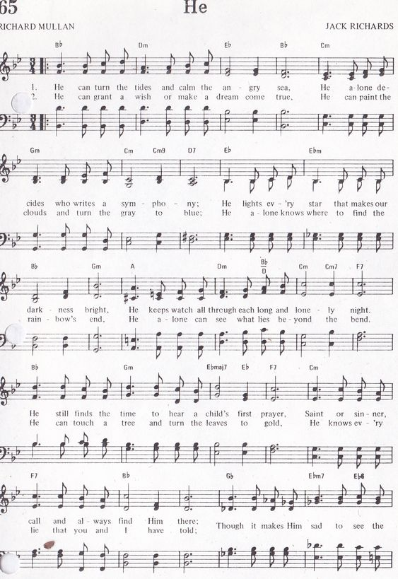

|
|
【祂】 |
|
He can turn the tides |
祂斥責風浪狂風大浪平靜， |
|
祂斥責風浪狂風 https://www.pinterest.com/pin/461267186834289449/ https://www.poppiano.org/sheet/?id=51432

 |
|
|
|
|

- He ( 祂 ) by McGuire Sisters 1950's - 60's 年代 https://www.youtube.com/watch?v=JbTzIow1YBc
- https://youtu.be/Dle3B9TiaZk
| Text: | He |
| Author: | Richard Mullan |
| Tune: | [He can turn the tides and calm the angry sea] |
| Composer: | Jack Richards |
Tune Information
| Title: | [He can turn the tides and calm the angry sea] |
| Composer: | Jack Richards |
| Copyright: | © Copyright 1954, 1969 by Avas Music Publishing Co., Inc |
靈修筆記：耶穌為何斥責風浪? (路加8:22-28)
2021-01-23聽我說
路加福音8:22-27
22.有一天耶穌和門徒上了船，對門徒說：『我們可以渡到湖那邊去。』他們就開了船。
23.正行的時候，耶穌睡著了；湖上忽然起了暴風，船將滿了水，甚是危險。
24.門徒來叫醒了祂，說：『夫子，夫子，我們喪命喇。』耶穌醒了，斥責那狂風大浪；風浪就止住，平靜了。
25.耶穌對他們說：『你們的信心在那�堜O？』他們又懼怕，又希奇，彼此說：『這到底是誰？祂吩咐風和水，連風和水也聽從祂了。』
26.他們到了格拉森(有古卷作加大拉)人的地方，就是加利利的對面。
27.耶穌上了岸，就有城�堣@個被鬼附著的人，迎面而來；這個人許久不穿衣服，不住房子，只住在墳塋�堙C
28.「他見了耶穌，就俯伏在祂面前，大聲喊叫，說：『至高神的兒子耶穌，我與你有甚麼相干？求你不要叫我受苦。』
這裡要討論的是為什麼耶穌要斥責風浪，用「斥責」這兩個字估計耶穌生氣了。
廣告
檢舉此廣告
第25節 耶穌對門徒是用說的，而不是用斥責的方式，所以令人好奇的是，耶穌為何對風浪反而是用斥責的方式。
首先耶穌與門徒上了船，對門徒說：『我們可以渡到湖那邊去。』
於是他們從加利利湖出發時，湖上還是風平浪靜，
但在途中耶穌睡著了；湖上忽然起了暴風，原本好端端的為什麼突然起了暴風呢?
而且耶穌的門徒中有好幾位是打魚的，他們的工作都是在船上、海上，
這暴風竟然強到就連門徒當中曾經是經驗豐富的漁夫都無法控制。
當門徒以為要喪命時，就趕緊叫醒了耶穌，接著耶穌斥責了這風浪，風浪就止住了。
但風和海是沒有位格和知覺的，主耶穌其實是斥責風和海背後的空中掌權者(弗二2)，和海�堛漲簸�(參五13)。
因為牠們知道耶穌要去格拉森人的地方，在那裡有一個被鬼附的人。
所以當耶穌上岸後，被鬼附的這人迎面而來看見耶穌，馬上就俯伏在祂面前，大聲喊叫，說：『至高神的兒子耶穌，我與你有甚麼相干？求你不要叫我受苦。』
耶穌什麼話都還沒說，這人卻知道耶穌來的目的，有可能這場風暴是要阻止耶穌前往這裡。
耶穌同時也透過這經歷，教導門徒認識祂是誰。